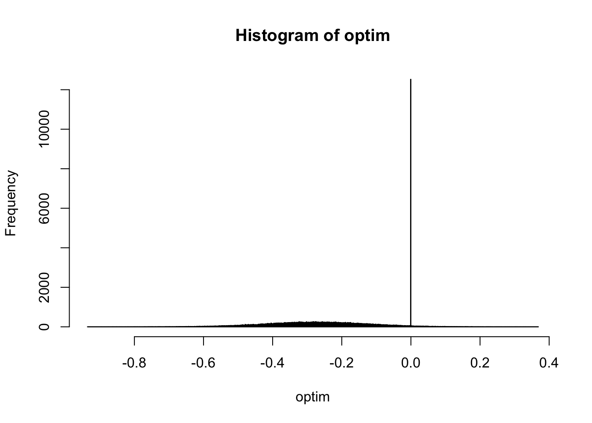
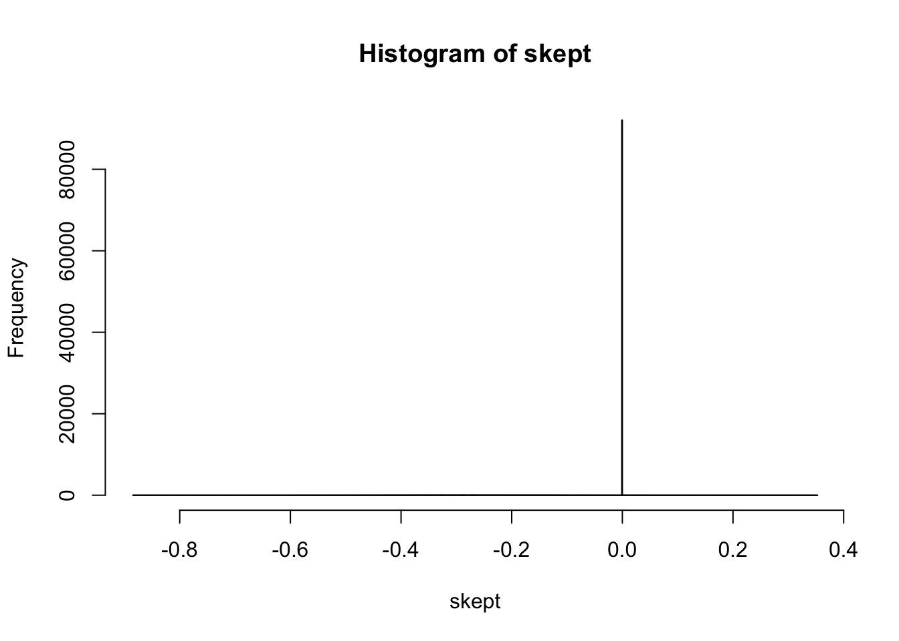

Last updated: 2019-06-15
Checks: 6 0
Knit directory: nejm/
This reproducible R Markdown analysis was created with workflowr (version 1.3.0). The Checks tab describes the reproducibility checks that were applied when the results were created. The Past versions tab lists the development history.
Great! Since the R Markdown file has been committed to the Git repository, you know the exact version of the code that produced these results.
Great job! The global environment was empty. Objects defined in the global environment can affect the analysis in your R Markdown file in unknown ways. For reproduciblity it’s best to always run the code in an empty environment.
The command set.seed(20190606) was run prior to running the code in the R Markdown file. Setting a seed ensures that any results that rely on randomness, e.g. subsampling or permutations, are reproducible.
Great job! Recording the operating system, R version, and package versions is critical for reproducibility.
Nice! There were no cached chunks for this analysis, so you can be confident that you successfully produced the results during this run.
Great! You are using Git for version control. Tracking code development and connecting the code version to the results is critical for reproducibility. The version displayed above was the version of the Git repository at the time these results were generated.
Note that you need to be careful to ensure that all relevant files for the analysis have been committed to Git prior to generating the results (you can use wflow_publish or wflow_git_commit). workflowr only checks the R Markdown file, but you know if there are other scripts or data files that it depends on. Below is the status of the Git repository when the results were generated:
Ignored files:
Ignored: .DS_Store
Ignored: .RData
Ignored: .Rhistory
Note that any generated files, e.g. HTML, png, CSS, etc., are not included in this status report because it is ok for generated content to have uncommitted changes.
These are the previous versions of the R Markdown and HTML files. If you’ve configured a remote Git repository (see ?wflow_git_remote), click on the hyperlinks in the table below to view them.
| File | Version | Author | Date | Message |
|---|---|---|---|---|
| Rmd | 675b8e0 | Sarah Urbut | 2019-06-15 | wflow_publish(“analysis/first-analysis.Rmd”) |
| html | c521b99 | Sarah Urbut | 2019-06-13 | Build site. |
| Rmd | 76f5c20 | Sarah Urbut | 2019-06-13 | wflow_publish(“analysis/first-analysis.Rmd”) |
| html | 3de89d4 | Sarah Urbut | 2019-06-13 | Build site. |
| Rmd | b5ee2b3 | Sarah Urbut | 2019-06-13 | wflow_publish(“analysis/first-analysis.Rmd”) |
| html | b61f95f | Sarah Urbut | 2019-06-13 | Build site. |
| Rmd | 2d0be56 | Sarah Urbut | 2019-06-13 | wflow_publish(“analysis/first-analysis.Rmd”) |
| html | 20f8baa | Sarah Urbut | 2019-06-13 | Build site. |
| Rmd | 32693f3 | Sarah Urbut | 2019-06-13 | wflow_publish(“analysis/first-analysis.Rmd”) |
| html | ebdfded | Sarah Urbut | 2019-06-13 | Build site. |
| Rmd | e0954ea | Sarah Urbut | 2019-06-13 | wflow_publish(“analysis/first-analysis.Rmd”) |
| html | 57fdcd7 | Sarah Urbut | 2019-06-13 | Build site. |
| Rmd | d691c24 | Sarah Urbut | 2019-06-13 | wflow_publish(“analysis/first-analysis.Rmd”) |
| html | 5fbc1ea | Sarah Urbut | 2019-06-13 | Build site. |
| Rmd | 2d415aa | Sarah Urbut | 2019-06-13 | wflow_publish(“analysis/first-analysis.Rmd”) |
| html | c29a53d | Sarah Urbut | 2019-06-13 | Build site. |
| html | 48be67b | Sarah Urbut | 2019-06-12 | Build site. |
| html | 894b529 | Sarah Urbut | 2019-06-12 | Build site. |
| html | 4462ea2 | Sarah Urbut | 2019-06-12 | Build site. |
| html | 427ef76 | Sarah Urbut | 2019-06-12 | Build site. |
| Rmd | 91b60a2 | Sarah Urbut | 2019-06-12 | Publish analysis files |
In this document, we aim to run a post-hoc Bayesian analysis of the results in Thiele et al. In table 3 of this paper, they show that the relative risk of death from any cause at 1 year is 0.88 (0.76-1.01) for Culprit only vs Multivessel PCI. This is equivalent to a log Odds ratio of \[log \frac{[172/172]}{[194/147]}/ \approx -0.27\]. A Bayesian analysis with an improper (Jeffrey’s) prior on \(\theta\) would result in acredible interval identical to the confidence interval with a standard error equivalent to 0.15 from the formula below.
We know that the \[SE(logθ) = \sqrt{(1/n_{11} + 1/n_{12} + 1/n_{21} + 1/n_{22})}.\]
If we assume a generous, perhaps ‘ridiculous’ prior on \(\theta=OR\) of \(\theta \sim N(0,1)\), then we would arrive a posterior estimate of \[\theta|\hat{\theta},\hat{s^{2}},\sigma^2\] using simple conjugate normal with \(\theta \sim N(0,1)\) and data \(\hat{\theta}\)=-0.28, \(\hat{s}\)=0.15.
\[\tilde{\theta}\sim{\frac {\sigma _{0}^{2}}{ \sigma ^{2}+\sigma _{0}^{2}} \hat {\theta} + {\frac {\sigma _{0}^{2}}{ \sigma ^{2}+\sigma _{0}^{2}} \theta_{0}}}\]
\[\tilde{\sigma^2}\sim ( \frac {1}{ \sigma ^{2}} + \frac{1}{\sigma _{0}^{2}})^{-1}\]
##SE log OR
dataSE=sqrt(1/172+1/(344-172) + 1/194 + 1/(341-194))
post_mean=function(priormean,priorsd,datamean,datase){
priorsd^2/(datase^2+priorsd^2)*datamean+datase^2/(datase^2+priorsd^2)*priormean}
post_var=function(priorsd,datase){
1/(1/datase^2+1/priorsd^2)}
pm=post_mean(priormean = 0,priorsd = 1,datamean = -0.28,datase = dataSE)
pv=post_var(priorsd = 1,datase = dataSE)We can sample from this distribution and plot the 95% Credible intervals:
rsamp=rnorm(100000,mean=pm,sd=sqrt(pv))
hist(rsamp,freq=F,nclass = 100)
a=qnorm(p =0.025,mean = pm,sd=sqrt(pv))
b=qnorm(p =0.975,mean = pm,sd=sqrt(pv))
abline(v=a)
abline(v=b)
| Version | Author | Date |
|---|---|---|
| 427ef76 | Sarah Urbut | 2019-06-12 |
Now, let’s try various levels of confidence such that \(\theta\) is simulated as a mixture of distirbutions with point mass on 0.
\[\theta \sim \pi_{0} \delta_{0} + \pi_{1} N (0,\sigma^2)\] where \(\sigma^2 =1\)
We can try varying levels of skepticisim, with \(\pi_{0}\) = 0.10,0.50, and 0.90 for confident, moderate, and skeptical accordingly.
\(\pi=p(z=k)\) is the prior probability of a data point arising from a particular component, while the posterior weight or `responsibility’ represents the probability of the data arising from a particualr component given the data observed. Here, each component corresponds to one of the two available densities.
\[\tilde \pi = p(z=k|data) = \frac{p(data|z=k)}{\sum_k{p(data|z=k)}}=\frac{p(data|z=k)}{\pi_{0} p(data|N(0,\hat{se}^{2}+\sigma^{2}_{0\delta_{0}})+\pi_{1} p(data|N(0,\hat{se}^2+\sigma^{2}_{0k}))}\]
The marginal \(p(data|N(0,\hat{se}^2+\sigma^{2}_{0k})\) is akin to evaluating the normal density \(N(0,\hat{se}^2+\sigma^{2}_{0k})\) at \(\hat{\theta}\).
###the marginal likelihood is N(0,\sigma_[0] + \sigma^2
sdlik=sqrt(1+dataSE^2)
optimistic=0.90*dnorm(-0.28,mean = 0,sd=sdlik)/(0.90*dnorm(-0.28,mean = 0,sd=sdlik)+0.10*dnorm(-0.28,mean = 0,sd=dataSE))
moderate=0.50*dnorm(-0.28,mean = 0,sd=sdlik)/(0.50*dnorm(-0.28,mean = 0,sd=sdlik)+0.50*dnorm(-0.28,mean = 0,sd=dataSE))
skeptical=0.10*dnorm(-0.28,mean = 0,sd=sdlik)/sum(0.10*dnorm(-0.28,mean = 0,sd=sdlik)+0.90*dnorm(-0.28,mean = 0,sd=dataSE))Then, we can run simulations according to these componenets to determine the density
FOr the optimistic simulation:
dm=-0.28
nsim=100000
sims=rbinom(n=nsim,1,prob=0.5)
optim=NULL
for(i in 1:nsim){
a=rbinom(n=1,1,prob=optimistic)
pm=post_mean(priormean=0,priorsd=a*1,datamean=dm,datase=dataSE)
ps=sqrt(post_var(priorsd = a*1,datase = dataSE))
b=rnorm(1,mean=pm,sd=sqrt(ps))
optim[i]=b
}
hist(optim,nclass=100)
| Version | Author | Date |
|---|---|---|
| 427ef76 | Sarah Urbut | 2019-06-12 |
moder=NULL
for(i in 1:nsim){
a=rbinom(n=1,1,prob=moderate)
pm=post_mean(priormean=0,priorsd=a*1,datamean=dm,datase=dataSE)
ps=sqrt(post_var(priorsd = a*1,datase = dataSE))
b=rnorm(1,mean=pm,sd=sqrt(ps))
moder[i]=b
}
hist(moder,nclass=100)
| Version | Author | Date |
|---|---|---|
| 427ef76 | Sarah Urbut | 2019-06-12 |
skept=NULL
for(i in 1:nsim){
a=rbinom(n=1,1,prob=skeptical)
pm=post_mean(priormean=0,priorsd=a*1,datamean=dm,datase=dataSE)
ps=sqrt(post_var(priorsd = a*1,datase = dataSE))
b=rnorm(1,mean=pm,sd=sqrt(ps))
skept[i]=b
}
hist(skept,nclass=100)
| Version | Author | Date |
|---|---|---|
| 427ef76 | Sarah Urbut | 2019-06-12 |
sessionInfo()R version 3.5.2 (2018-12-20)
Platform: x86_64-apple-darwin15.6.0 (64-bit)
Running under: macOS Mojave 10.14.5
Matrix products: default
BLAS: /Library/Frameworks/R.framework/Versions/3.5/Resources/lib/libRblas.0.dylib
LAPACK: /Library/Frameworks/R.framework/Versions/3.5/Resources/lib/libRlapack.dylib
locale:
[1] en_US.UTF-8/en_US.UTF-8/en_US.UTF-8/C/en_US.UTF-8/en_US.UTF-8
attached base packages:
[1] stats graphics grDevices utils datasets methods base
loaded via a namespace (and not attached):
[1] workflowr_1.3.0 Rcpp_1.0.1 digest_0.6.18 rprojroot_1.3-2
[5] backports_1.1.4 git2r_0.25.2 magrittr_1.5 evaluate_0.13
[9] stringi_1.4.3 fs_1.3.0 whisker_0.3-2 rmarkdown_1.12
[13] tools_3.5.2 stringr_1.4.0 glue_1.3.1 xfun_0.6
[17] yaml_2.2.0 compiler_3.5.2 htmltools_0.3.6 knitr_1.22